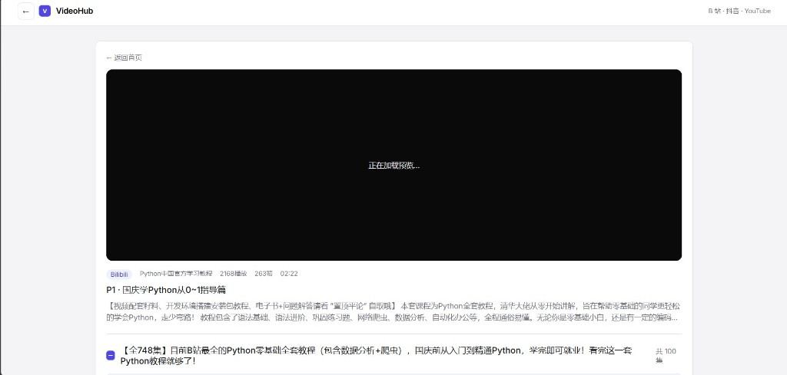
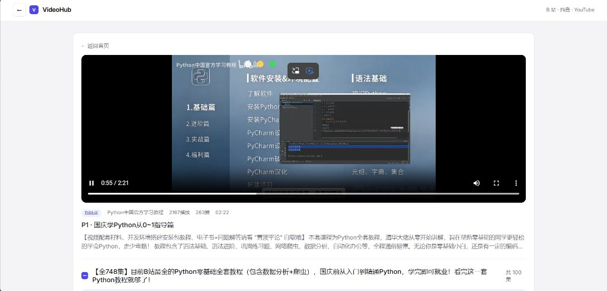
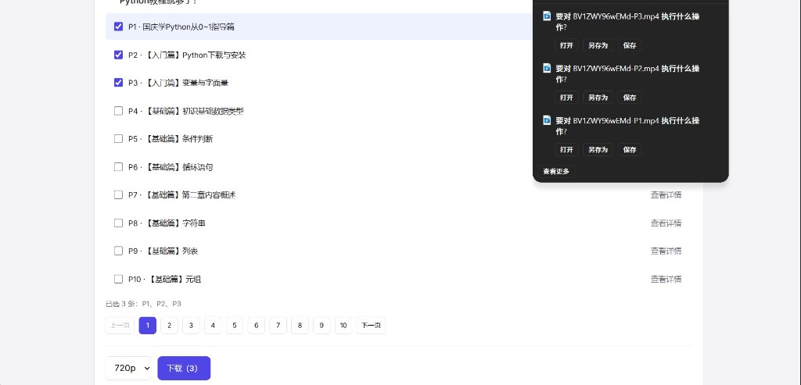

01
独立原型
Vibe Coding
VideoHub
把 B 站、抖音、YouTube 等音视频平台的公开媒体学习资源解析，提供给用户统一的资源预览与本地保存体验，方便用户提高学习效率。
- 角色
- 自己写 PRD 并落地
- 产品形态
- 本机网页原型
- 材料
- GitHub 仓库
问题
想把公开课或收藏视频存到本地时，各平台入口不统一：有的没有下载，有的缓存格式受平台约束，合集还要一条条处理。
目标用户很具体：在 B 站 / 抖音 / YouTube 看到一套课程，想缓存其中几集，离线观看。
产品目标
第一版只做成三件事：链接能否解析、文件能否保存、合集能否勾选后批量下载。
网页端先做完；付费视频、去水印、会员体系都放到后面。
产品运行
同一条课程链接走完三步。图按实际界面贴，点开可看原图。
-
01
预览加载
解析成功后先进入媒体页。预览还在拉时写明「正在加载」，标题、来源和合集已经在下面，不让页面空着。

先给状态，再给画面。 -
02
视频播放
用浏览器原生播放器预览。清晰度、来源和时长跟在播放器下面，合集入口不挡正在看的这一集。

预览和下载是两条路。 -
03
多集下载
勾选 P1、P2、P3 后，下载按钮显示数量。浏览器下载栏同时出现三个文件，而不是合成一个。

选几条，就出现几个下载任务。
关键决策
做了什么、以及明确不做的。
- 初版下载交给浏览器下载栏 不自建任务队列。第一版优先保证「能下载保存」，状态机留到 P1。
- 预览和下载拆开 预览走代理流，下载走附件。预览失败时仍应能下载；返回首页只取消预览，不会中断已开始的下载。
- 合集至少保留一条勾选逻辑 取消全选时，回到「当前正在看的那一集」，不允许全部空选。查看详情不改已选项。
- 各平台解析任务隔离 基于产品主要目标，以及不同平台的视频类型和用户目的，隔离不同平台的解析与下载任务，提高效率。
这一版做了
- 粘贴链接解析：B 站、抖音分享短链、YouTube、X
- 预览视频，再交给 Chrome / Edge / 夸克下载栏
- 合集分页、勾选、全选规则、合集视频下载
- 先写 PRD ，再按验收标准监督AI作业
后续补充
- 账号、Stripe体系、去水印
- 应用内下载队列和进度面板
- 登录后的高码率与音视频分轨合并
- 公网部署
怎么验收
- 单个视频：解析 → 预览 → 下载
- 合集：勾选 N 条，下载栏出现 N 个任务供用户确定保存路径后下载
- 返回首页：预览停，下载继续
- 刷新媒体页：预览效果重新加载
局限
这是个人 vibe coding 原型，目前仅支持本地clone项目运行，不是上线产品。另外该工具仅供个人学习使用，请只解析自己有权访问的公开内容，并遵守各平台条款。